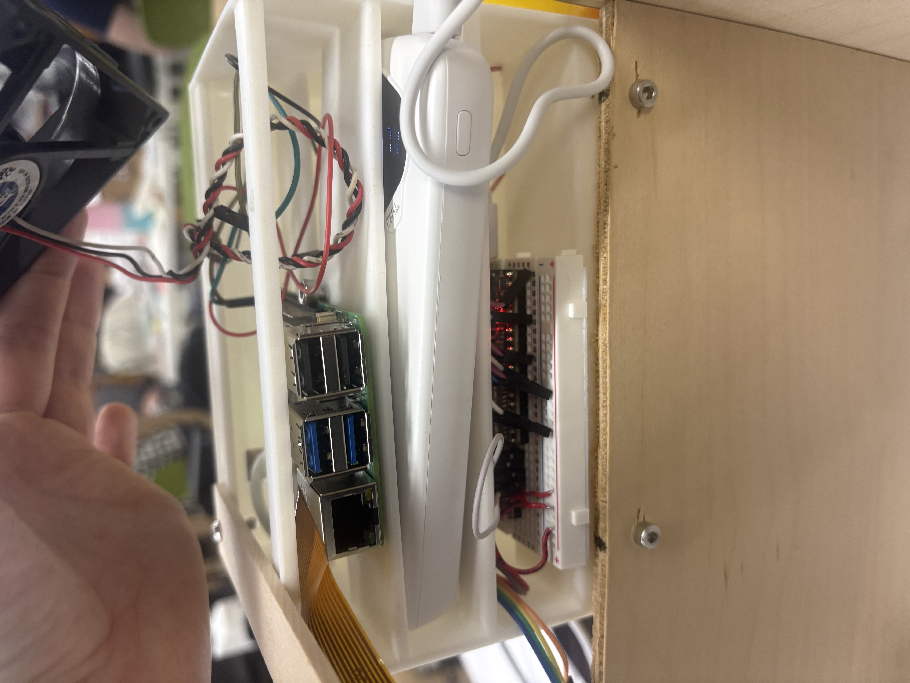
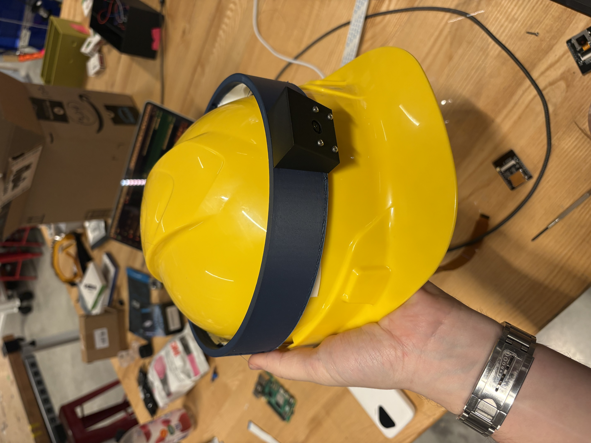

For this week I tried to print something "in place". I was thinking about a way to communicate in an analog fashion for my MIT class, and I needed a ball with holes on 3 axes. It's quite hard to make via subtractive methods, so I thought — why not 3D print it. The fun part was I also needed it encased so it couldn't get out, so I made a box with holes smaller than the ball. Anyway, it's a fun trinket.
Interactive CAD — rotate & zoom | Download STL
HOWEVER, i forgot to take a picture and the ball box is somewhere in my common room...Some other prints I did in the class:
This is my final project enclosure — a 3D printed compute stack that clips onto the scanner body:

And this camera mount for a hard hat:

I scanned the debugging duck using the scanner in the lab but couldn't find the file. So I went a bit crazy and tried state-of-the-art 3D scene reconstruction — I found an open source model, rented a GPU, and did a full reconstruction of my controller from a phone video.
No LiDAR or depth sensor — just a phone video — so any cheap device can do this. It works better for large scenes than small objects, but still impressive. There's quite a bit of noise so you'd want to clean it up in Blender.